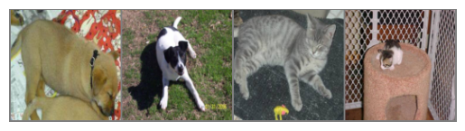

Part 1
Brief introduction to Images
- An image is a multi-dimensional array that is made up of pixels.
- Each pixel takes an integer value, typically ranging from 0 to 255. These values correspond to information regarding the color and brightness.
- The shape of the image can be represented as (height x width x channels). Grayscale images have just 1 channel and the shape of a grayscale image would be just (H, W). In the case of RGB images, we have 3 channels (one each for Red, Green and Blue) and so the shape of the image would be (H, W, 3)
Images as Numpy Arrays
Visualizing a 3 x 3 (9 pixels) Numpy array as a grayscale image
[[ 0 0 0]
[ 0 255 0]
[ 0 0 0]]- A pixel value of 0 would be represented as black
- A pixel value of 255 would be represented as white
Visualize a 100 x 100 (10000 pixels) Numpy array as a grayscale image
(H, W): (100, 100)Visualize a 100 x 100 X 3 Numpy array as an RGB image
(H, W, C): (100, 100, 3)Loading and viewing an Image
Using PIL to open an uploaded image and view it using matplotlib
Convert the image to Numpy array
print('The min pixel value is',np.min(image_array))
print('The max pixel value is',np.max(image_array))The min pixel value is 0
The max pixel value is 255Visualize the same image but as a Numpy Array
Observing the three channels in the Image
#Each channel will be a matrix of shape (H, W)
print('Shape of channel 1:',image_array[:,:,0].shape)
print('Shape of channel 2:',image_array[:,:,1].shape)
print('Shape of channel 3:',image_array[:,:,2].shape)Shape of channel 1: (1280, 1920)
Shape of channel 2: (1280, 1920)
Shape of channel 3: (1280, 1920)Convert the image to grayscale
Observations
- Images can be looked at as Numpy arrays and can be manipulated accordingly
- The type of the image would determine its shape. If required, an RGB image can be converted to Grayscale, thus reducing some computational load in downstream tasks
Dataset Structure
A dataset was downloaded from Kaggle. This is present as a zip file. Within it are two directories named cats_set and dogs_set, each of which contain images belonging to the respective categories
content/dataset/ |--------cats_set/ | |-----\cat.4001.jpg | |-----\cat.4002.jpg |--------dogs_set/ | |-----\dog.4001.jpg | |-----\dog.4002.jpg
Part 2
Problem * The images are present within the directories and they currently have no labels * The images are of different resolutions (H & W are different for the images)
Possible approach * Loop through all images and store as an array. The names of the directory can be stored as corresponding label * Resize all images to the same size and flatten to have them in a single dimension. These transformations will depend on the models being used and the specific usecases
def create_image_and_labels(data_dir, target_size=(200,200)):
# Array for images and labels respectively
images = []
labels = []
class_names = os.listdir(data_dir)
# Loop through all directories
for class_name in class_names:
class_dir_path = os.path.join(data_dir, class_name)
#Loop through all images
for image_name in os.listdir(class_dir_path):
image_path = os.path.join(class_dir_path, image_name)
#Open image using PIL, resize and convert to grayscale
image = Image.open(image_path).resize(target_size).convert('L')
#Convert to numpy array, flatten and normalize
resized_image = np.array(image).flatten()/255
images.append(resized_image)
labels.append(class_name)
return np.array(images), np.array(labels)There are a total of 1000 images. Each image was resized to (200,200) and converted to grayscale followed by flattening. This makes each image have a dimension of 40000
Part 3
#For visualizing, we undo the transformation
def imshow(img_tensor):
img = img_tensor / 2 + 0.5
np_img = img.numpy()
plt.imshow(np.transpose(np_img, (1, 2, 0)))
plt.axis('off')
plt.show()
# Get one batch
dataiter = iter(dataloader)
images, labels = next(dataiter)
# Show images
imshow(torchvision.utils.make_grid(images))
print("Labels:", labels)
Labels: tensor([1, 1, 0, 0])